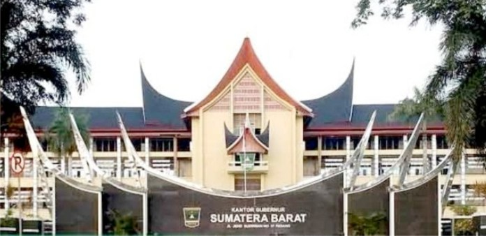

Politik dan Pemerintahan
Provinsi Sumatera Barat dipimpin oleh seorang gubernur yang dipilih dalam pemilihan secara langsung bersama dengan wakilnya untuk masa jabatan 5 tahun. Gubernur selain sebagai pemerintah daerah juga berperan sebagai perwakilan atau perpanjangan tangan pemerintah pusat di wilayah provinsi yang kewenangannya diatur dalam Undang-undang nomor 32 Tahun 2004 dan Peraturan pemerintah nomor 19 tahun 2010.
Sementara hubungan pemerintah provinsi dengan pemerintah kabupaten dan kota bukanlah sub-ordinat, masing-masing pemerintahan daerah tersebut mengatur dan mengurus sendiri urusan pemerintahan menurut asas otonomi dan tugas pembantuan.
Perwakilan
Berdasarkan Pemilu Legislatif 2009, Sumatera Barat mengirimkan 14 wakil ke DPR RI dari dua daerah pemilihan dan empat wakil ke DPD. Sedangkan untuk DPRD Sumatera Barat tersusun dari perwakilan sepuluh partai, dengan perincian sebagai berikut:
Pemerintahan Nagari
Sampai tahun 1979 satuan pemerintahan terkecil di Sumatera Barat adalah nagari, yang sudah ada sebelum kemerdekaan Indonesia. Dengan diberlakukannya Undang-undang nomor 5 tahun 1979 tentang pemerintahan desa, status nagari dihilangkan diganti dengan desa, dan beberapa jorong ditingkatkan statusnya menjadi desa. Kedudukan wali nagari juga dihapus dan administrasi pemerintahan dijalankan oleh para kepala desa. Namun sejak bergulirnya reformasi pemerintahan dan otonomi daerah, maka sejak pada tahun 2001, istilah "Nagari" kembali digunakan di provinsi ini
Budaya politik yang hidup di pemerintahan desa Sumatera Barat semenjak kebijaksanaan penyeragaman (UU No.5 Tahun 1979) diberlakukan adalah budaya politik parokhial. kondisi ini terlihat melalui sistem kekuasaan, sistem pemilihan penguasa, syarat penguasa, dan peranan penguasa di pemerintahan desa.
Sistem kekerabatan dalam membangun budaya politik partisipan mulai terjadi pergeseran, dalam hal tingkat kepekaan, bentuk toleransi dalam kekerabatan, dan peranan senioritas dalam kekerabatan. Artinya berkurangnya kebersamaan dalam sistem kekuasaan kekerabatan.
Pemerintahan nagari merupakan suatu struktur pemerintahan yang otonom, punya teritorial yang jelas dan menganut adat sebagai pengatur tata kehidupan anggotanya, sistem ini kemudian disesuaikan dengan konstitusi yang berlaku di Indonesia, sekarang pemerintah provinsi Sumatera Barat menetapakan pemerintah nagari sebagai pengelola otonomi daerah terendah untuk daerah kabupaten mengantikan istilah pemerintah desa yang digunakan sebelumnya. Sedangkan untuk nagari yang berada pada sistem pemerintahan kota masih sebagai lembaga adat belum menjadi bagian dari struktur pemerintahan daerah.
Peluang yang terjadi pada pemerintahan desa yaitu munculnya pertumbuhan ekonomi yang bersifat individualistik. Kondisi ini sebagai akibat ketergantungan pada pemerintah pusat, sehingga kurang kemandirian. Kondisi ini dapat memperlemah ketahanan wilayah bidang ekonomi itu sendiri. Namun, sekarang desa-desa Sumatera Barat telah mencoba membangun upaya mempermudah kebijaksanaan politik pemerintah desa atau sejak bertukar kembali menjadi nagari, yaitu mengubah struktur dan proses antarstruktur pemerintahan desa yang dibuat berdasarkan UU No. 5 tahun 1979 itu.
Nagari pada awalnya dipimpin secara bersama oleh para penghulu atau datuk di nagari tersebut, kemudian pada masa pemerintah Hindia Belanda dipilih salah seorang dari para penghulu tersebut untuk menjadi wali nagari. Kemudian dalam menjalankan pemerintahannya, wali nagari dibantu oleh beberapa orang kepala jorong atau wali jorong, namun sekarang dibantu oleh sekretaris nagari (setnag) dan beberapa pegawai negeri sipil (PNS) bergantung dengan kebutuhan masing-masing nagari. Wali nagari ini dipilih oleh anak nagari (penduduk nagari) secara demokratis dalam pemilihan langsung untuk 6 tahun masa jabatan.
Dalam sebuah nagari dibentuk Kerapatan Adat Nagari, yakni lembaga yang beranggotakan Tungku Tigo Sajarangan. Tungku Tigo Sajarangan merupakan perwakilan anak nagari yang terdiri dari Alim Ulama, Cadiak Pandai (kaum intelektual) dan Niniak Mamak para pemimpin suku dalam suatu nagari, sama dengan Badan Permusyawaratan Desa (BPD) dalam ssistem administrasi desa. Keputusan keputusan penting yang akan diambil selalu dimusyawarahkan antara wali nagari dan Tungku Tigo Sajarangan di Balai Adat atau Balairung Sari Nagari.